Premium Plant Pop Irrigation Services for Thriving Gardens
Discover innovative irrigation solutions inspired by nature’s most delicate butterfly wings and flourishing gardens, tailored to keep your plants healthy and your garden vibrant year-round. Experience the blend of science, nature, and technology in every drop.
About Plant Pop Irrigation
Plant Pop Irrigation is a pioneer in sustainable garden care, specializing in custom-built irrigation systems that marry the delicate balance between water conservation and lush plant growth. We harness the gentle yet efficient patterns inspired by butterflies fluttering among the blooms, ensuring your garden receives water exactly when and where it needs it.
Our team of experts uses biomimicry principles to design irrigation installations that reciprocate nature’s harmony. By studying the movement and distribution efficiency of butterflies and native pollinators, we've revolutionized irrigation to minimize water wastage while maximizing plant health.
Our commitment goes beyond installation; we continuously innovate by integrating cutting-edge technology such as IoT-enabled sensors, solar-power integrations, and AI-driven water management systems to provide you seamless, worry-free irrigation solutions tailored to your garden's unique ecosystem.
Serving residential gardens, urban farms, commercial landscapes, and greenhouse operations, we understand that no two gardens are alike and customize every project to meet your soil, plant species, climate, and water source specifications.
Environmental Benefits of Efficient Irrigation
Conserving water and protecting natural ecosystems are at the heart of Plant Pop’s philosophy. Efficient irrigation practices significantly reduce freshwater consumption, preserving local water tables and reducing strain on municipal supply systems.
By targeting water exactly where roots absorb moisture, runoff and evaporation are minimized, which means fewer pollutants and fertilizers leach into nearby waterways. This improves overall soil health and biodiversity.
Furthermore, our solar-powered irrigation options decrease reliance on fossil fuels, cutting your garden’s carbon footprint. These initiatives align your garden care with global sustainability goals, making it a contributing part of a healthier planet.
Common Irrigation Challenges and Solutions
Gardeners often face problems such as uneven watering, clogged emitters, and fluctuating water pressure. These issues can stunt plant growth or cause unnecessary water waste.
Our diagnostic services identify root causes whether it be soil composition, irrigation system faults, or environmental factors. We then apply precise solutions like pressure regulators, timer adjustments, or system redesign to improve efficiency.
Additionally, our maintenance packages ensure your irrigation remains trouble-free year-round, preventing costly repairs and plant damage.
How to Choose the Right Irrigation System for Your Garden
Each garden is unique in size, plant variety, and water requirements. Factors to consider include soil type, local climate, water source, and your maintenance preferences.
Drip irrigation works well for vegetable patches and flower beds by delivering water directly to roots. Sprinkler systems are ideal for lawns and large spaces requiring overhead watering. Smart controllers provide automated convenience by adapting watering schedules to weather and soil moisture.
Our experts guide you through assessing your garden’s needs and selecting systems that maximize efficiency and plant health while fitting your budget.
Seasonal Irrigation Tips for a Healthy Garden Year-Round
Adjusting your irrigation approach according to seasons can significantly improve water use and plant resilience.
During spring and summer, increase watering frequency to support active growth but avoid overwatering which can cause root rot. Fall requires reducing water as plants prepare for dormancy, and winter watering may only be necessary during dry spells.
Regularly check sensors and automate schedules to comply with seasonal needs, ensuring optimal hydration without wasting resources.
Our Irrigation Services
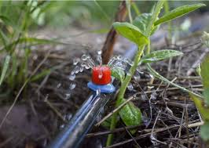
Drip Irrigation Installation
Precision watering via drip tubing reduces water runoff and improves moisture uptake directly at the roots. Ideal for vegetable patches, flower beds, and container gardens, our drip irrigation systems are designed to deliver water efficiently, ensuring your plants thrive without excess water waste.
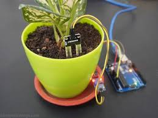
Soil Moisture Monitoring Setup
Install advanced sensors to monitor soil hydration in real-time. Receive alerts and analytics through our smart app platform to optimize irrigation schedules efficiently. This service ensures that your plants receive the right amount of water at the right time, promoting healthy growth and reducing water waste.
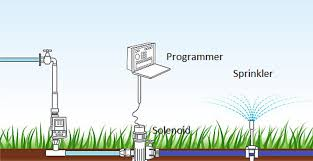
Automated Sprinkler Systems
State-of-the-art, programmable sprinklers designed to evenly distribute water with minimum waste. Perfect for lawns, landscapes, and flower gardens requiring scheduled watering. Our systems can be customized to fit the specific needs of your garden, ensuring optimal coverage and efficiency.
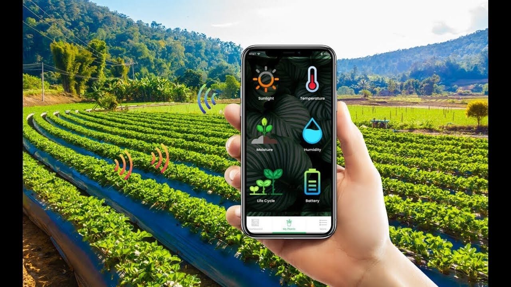
Smart Irrigation Control Installation
Integrate IoT-enabled controllers that adapt watering plans based on weather forecasts, season changes, and plant-specific needs, accessible from your smartphone or tablet. This technology allows for a more responsive and efficient irrigation system that can save you time and resources.
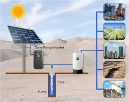
Solar-Powered Pump Solutions
Eco-conscious irrigation powered by solar energy reduces carbon footprints while maintaining consistent water pressure for your garden zones. Our solar solutions are designed to be efficient and sustainable, providing you with a reliable water source without the environmental impact.
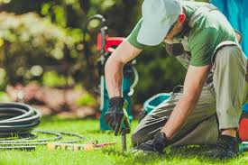
Irrigation Maintenance & Repairs
Regular upkeep to prevent leaks, blockages, and sensor malfunctions. Our technicians ensure your irrigation system operates at peak efficiency all year round. We offer comprehensive maintenance plans tailored to your system's needs, ensuring longevity and reliability.
Service Pricing
We offer transparent pricing plans for all our irrigation services to suit your budget and garden needs. Custom quotes available for large-scale or specialized projects. Our pricing is designed to be competitive while ensuring the highest quality of service and materials.
Pricing details for various irrigation services
Service
Starting Price (USD)
Description
Drip Irrigation Installation
$300
Includes materials and labor for up to 300 sq. ft. garden area.
Soil Moisture Monitoring Setup
$450
Installation of sensors with app integration for real-time data.
Automated Sprinkler Systems
$500
Full system installation including programmable timers.
Smart Irrigation Control Installation
$400
IoT-based smart controllers with weather adaptive technology.
Solar-Powered Pump Solutions
$1200
Green energy pumps suitable for medium to large gardens.
Irrigation Maintenance & Repairs
Starting at $150
Includes diagnostics and repairs for all irrigation components.
Gallery of Our Work
Explore our recent projects and installations showcasing healthy gardens thriving with our irrigation systems. Each image reflects our commitment to quality and the beauty of well-maintained landscapes.
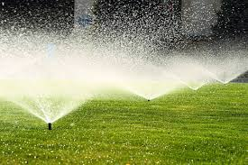
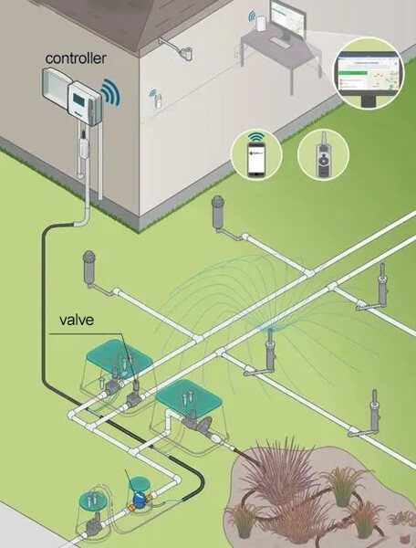
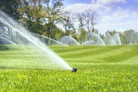
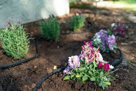
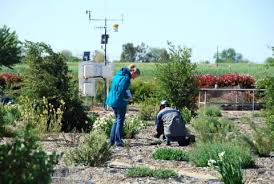
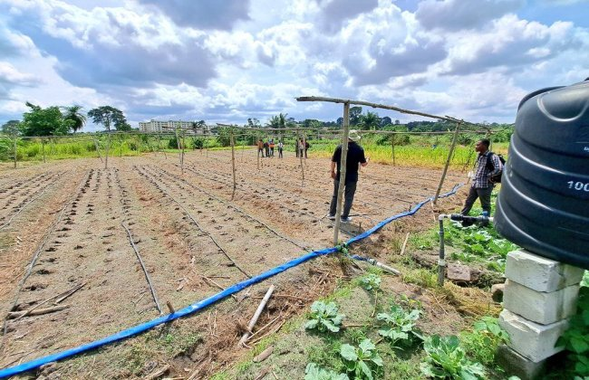
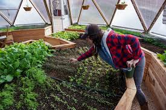
Customer Satisfaction & Testimonials
We pride ourselves on maintaining a 98%+ customer satisfaction rate. Our clients appreciate the attention to detail, promptness, and the remarkable health of their gardens thanks to our services. Here are some testimonials from our satisfied customers:
"The Plant Pop Irrigation team transformed my backyard garden – plants never looked healthier, and my water bills dropped!" - Emily R., New York
"Their smart irrigation technologies saved me so much time and effort. Highly recommend for all garden lovers." - Michael D., Brooklyn
"I was amazed at how quickly they installed my new system. The team was professional and knowledgeable, and my garden has never looked better!" - Sarah T., Los Angeles
"The customer service was exceptional, and the results speak for themselves. I love my new irrigation system!" - David L., Chicago
Disclaimer: Prices indicated are starting prices and may vary based on garden size, complexity, and customization. We recommend a site survey for accurate quotes. Plant Pop Irrigation is not liable for plant health affected by unforeseen environmental conditions or improper maintenance outside our service scope.
Contact Us
Address: 70 Washington Square South, New York, NY 10012, United States